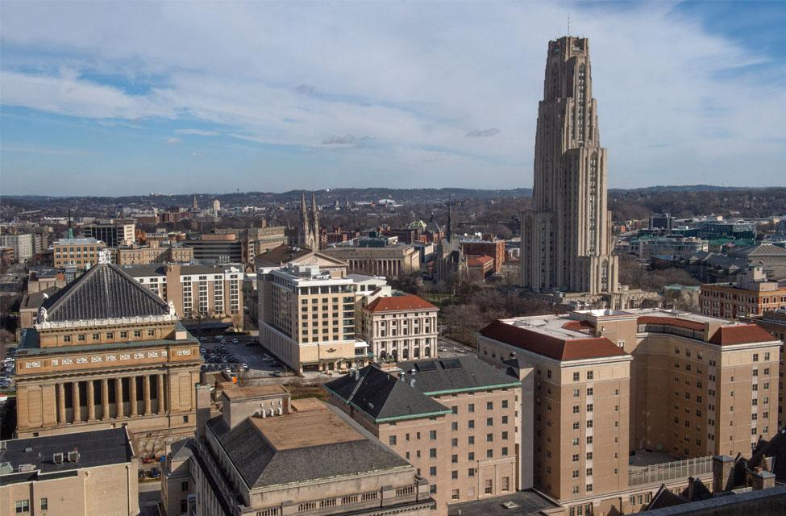
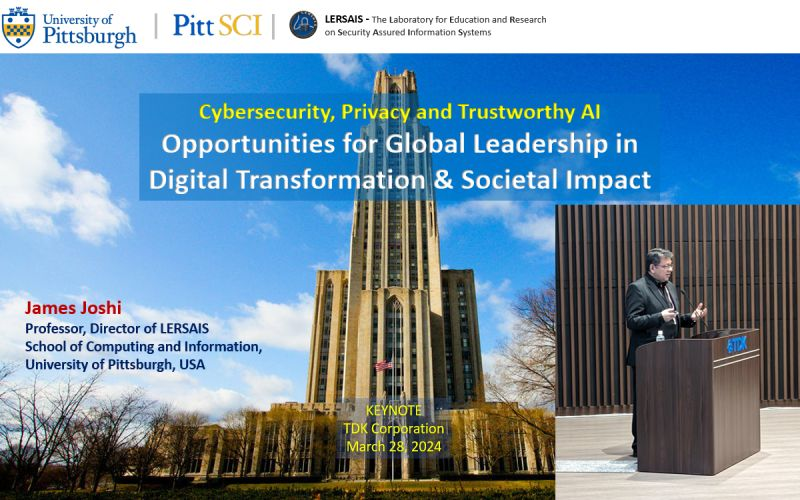
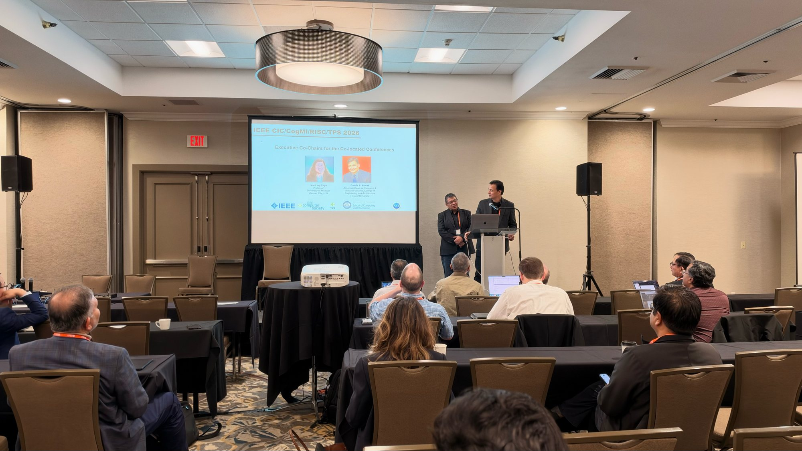
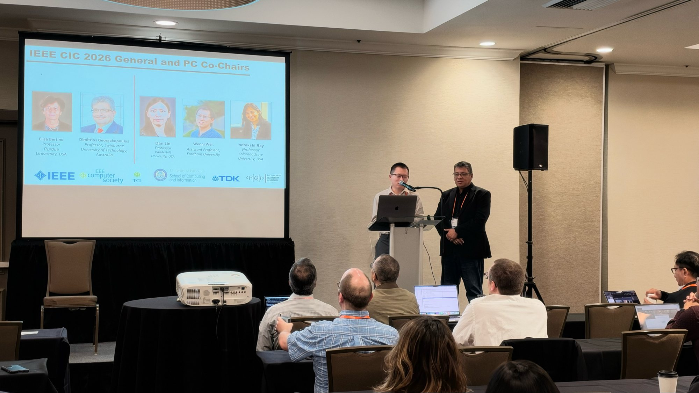
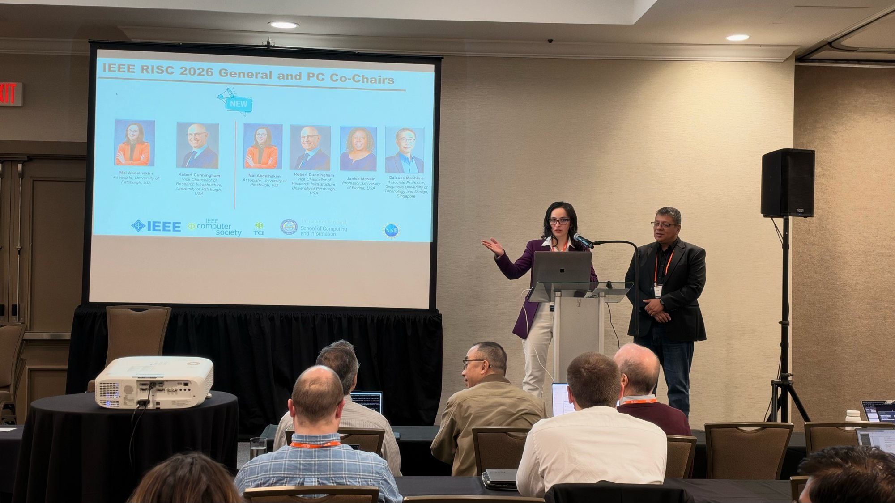
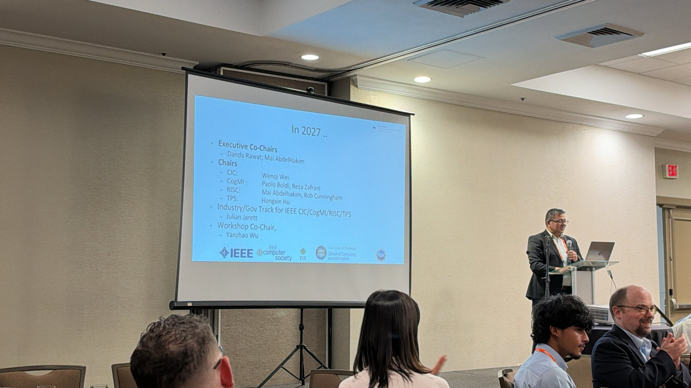

Life at LERSAIS.
The people, places, and conversations
that bring our work to life.

The LERSAIS community
Researchers and colleagues together at Pitt.


A place for discovery
University of Pittsburgh campus.


Ideas in conversation
Sharing research with the wider community.


Four conferences, together
Executive co-chairs introduced at IEEE CIC, CogMI, RISC, and TPS 2026.


IEEE CIC 2026
General and program committee co-chairs introduced in San Jose.


IEEE RISC 2026
General and program committee co-chairs of the first conference.


Looking ahead to 2027
Announcing the next conference leadership.
Research & collaboration
Research inquiries.
For questions about our work, doctoral study, or opportunities to collaborate with LERSAIS.
Contact the lab